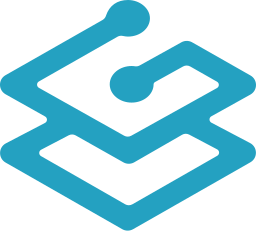
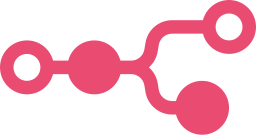

Secure web apps
Next.js and PostgreSQL systems with row-level security, audit logs and tested money logic.
Loan system case studyOpen to remote roles
I'm Joel Cimanes. I built and run the loan origination system of a private real-estate lender: row-level security forced on every table, 850+ tests, 56 reviewed migrations.
Next.js, Drizzle, Neon, n8n.
For lenders, agencies and small teams that need software they can trust with real customer data.
Next.js and PostgreSQL systems with row-level security, audit logs and tested money logic.
Loan system case studyn8n workflows built as code, and OpenAI and ElevenLabs agents that ship switched off and fail closed.
AI lead agent case studyCRM sync, Shopify, Google Workspace, domains and access, set up so the next person can run them.
Integrations case studyLoan files, pricing, conditions, documents, a borrower portal and servicing: payoffs, late fees, extensions and construction draws. It replaced two spreadsheets as the lender's system of record. Read the case study
Customer-facing automations ship switched off and in dry-run. A compliance check that cannot decide sends the lead to manual review.
Dry-run first
New SMS and email rules log what they would send until someone turns them on.
Two sources
An owner is contactable only when two records agree and the DNC and litigator scrub is clean.
Sent once
A unique index on rule and dedupe key stops a retried run from emailing twice.
A deny-by-default can(actor, action, resource) runs before each query, and FORCE ROW LEVEL SECURITY sits under it on every table.
export function can(actor, action, res) {
if (!actor.role) return false;
const fn = rules[actor.role]?.[action];
if (!fn) return false;
return fn(actor, res);
}Files land in a quarantine bucket. Magic bytes and a structural scan reject PDFs with scripts and Office files with macros.
Scrypt passwords under NIST 800-63B, an emailed one-time code bound to its purpose, and lockouts counted in SQL so racing requests cannot slip past.
850+ Vitest tests and 30 verify scripts run against a Neon branch, so staging data never touches production.
Each workflow is generated by a JavaScript build script with its own tests, so a change is a reviewed diff, not clicks in an editor.
Kylie, the SMS and voice lead agent, keeps call-hour gates, daily caps and dry-run by default, with conversation memory in Postgres.
Read the AI lead agent case studyStraight from the n8n editor. Turn the ring to see what each one does; the front card opens full size.
Webhooks move records as they change; a nightly job compares both sides and fixes what a missed event left behind. Read the case study
Contacts, opportunities, notes and conversations between the loan system and GoHighLevel.
PropertyRadar status changes are classified, kept in a Supabase ledger and turned into CRM actions.
The lender's dashboard: pipeline value, every file by stage, and the files that need attention. Built for Complete Lending. Figures and addresses are blurred. Case study
Built for Sonia Associates: a multi-tenant portal where the owner sees projects, tasks and time across clients, invoices it and exports reports. Client and project names are blurred. Case study
Remote for US teams, from IT and automation to owning a production system end to end.
Download the CVGoHighLevel workflows on loan-closing milestones across many subscriber accounts, and a template system for fast account setup.
Sole engineer on the loan origination system, plus 200+ n8n workflows and the Kylie SMS and voice agent.
Publishing for three brands, then a multi-tenant time-tracking portal built for the owner.
GoHighLevel campaign automation, client sites, DNS and SSL, Workspace, MFA and backups.
A Shopify Plus storefront and an 18-email lifecycle sequence with ManyChat segmentation.
TypeScript on Node 24, Postgres underneath, Docker behind Traefik with TLS and HSTS.


A design doc first: the domain model, the security layer, the phases and the open questions. Then small reviewed changes.
Schema changes are additive and migrate first. The running image is tagged before every deploy, so a rollback is one command. Periodic security audits run in an isolated Docker sandbox, and decisions go into ADRs and runbooks the next engineer can check.
Every route calls can(), but one missed check would expose another team's loan files.
FORCE ROW LEVEL SECURITY on all tables. The app connects as a role that cannot bypass it.
Migrations run as the owner role. A test fails if any table ships without a policy.
Checks in application code alone: one forgotten call would leak data. Rejected.
A cross-tenant read test runs on every pull request and must return zero rows.